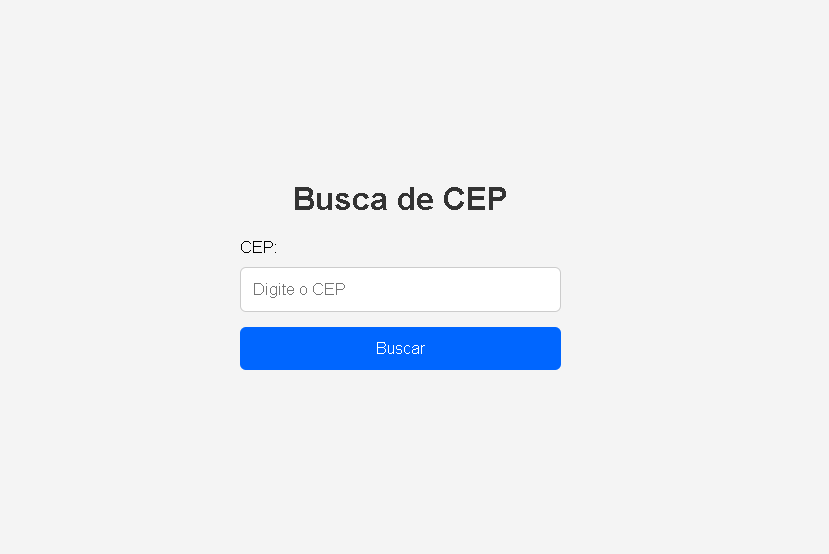

Busca de CEP
Sobre o Projeto
Este projeto foi desenvolvido com o objetivo de praticar o consumo de APIs utilizando JavaScript puro, simulando uma funcionalidade presente em diversas aplicações do mundo real: a consulta de endereços por CEP.
Imagem do Projeto

Tecnologias Utilizadas
- HTML5
- CSS3
- Javascript
- Git e GitHub
Conceitos praticados
- HTML5
- CSS3
- JavaScript (ES6+)
- Fetch API
- Async/Await
- API ViaCEP